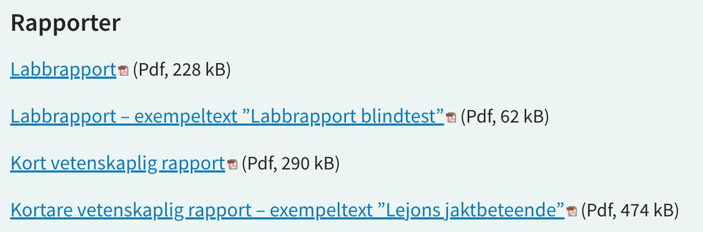

I den här kursen har vi två experiment för att bestämma Plancks konstant h:
Laborationsrapporten i den här kursen handlar om dessa båda experiment tillsammans.
Jag får alltid frågor en någon mall för labbrapporter men jag har inga rigida formkrav (förutom att man ska skriva sitt namn, att sidor ska vara numrerade, osv).
Det finns en funktion för fast utformade mallar där man bara behöver fylla, till exempel på en provningsanstalt. Om man gör krocktest skalla alla genomföras på samma sätt och redovisas på samma sätt. Det finns då en sektion om material och metoder som är exakt likadan för alla bilar. Delen med resultat är ofta mest grafer, inte många ord.
Vetenskapliga artiklar om experiment i naturvetenskap har ofta en annan karaktär, särskilt i högt rankade tidskrifter. Där vill forskarna berätta för sina läsare om något nytt som de har upptäckt, om hur de gjorde, om tolkningar, om att det är av intresse. Det ska vara utformat enligt gängse konventioner förstås, men det finns inga fasta mallar. Så försök följa stilen som i experimentella artiklar i tidskrifter som Nature, Science, eller Physical Review Letters (highlights). Dessa är tillgängliga via universitetsbiblioteket. Eller man väljer att läsa en tidskrift som riktar sig mot lärare - Physics Education eller American Journal of Physics.
Skolverket har en hel del bra material om olika texttyper på denna sida. Instruktioner för rapportskrivning och exempeltexter är inte helt lätt att hitta där men de ligger under "Fördjupning - presentationsformer" (klicka på "visa").

Om jag skulle ge feedback på exempeltexten om Blindtest skulle jag säga att minska på användandet av passiv form. Man kan ofta skriva med opersonliga subjekt (t ex "Grafen visar", osv). Och jag vill inte se materialförteckningar på det sättet. Det ska vara löpande text.
Man får gärna lämna in på papper, så slipper jag skriva ut. Men om man skickar elektroniskt är det klart bäst med en pdf. Det ser mest proffsigt ut om man använder sättningsprogram där LaTeX är väldigt bra för formler. Det tar lite energi att lära sig det men det är värt ansträngningen. Man kan installera det på sin egen dator men det är ofta enklare att använda molnlösningen Overleaf.
När man skickar in en komplettering ska man skriva ett kort meddelende om vilka ändringar man har gjort.